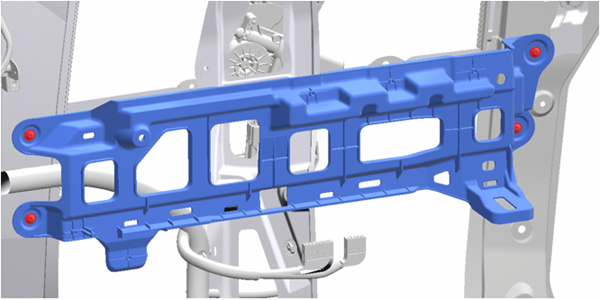
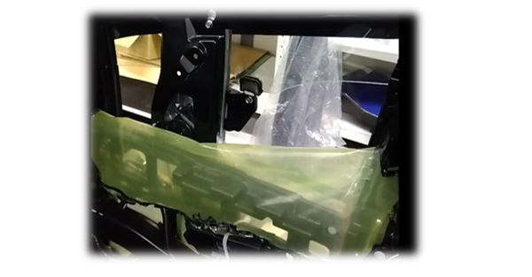
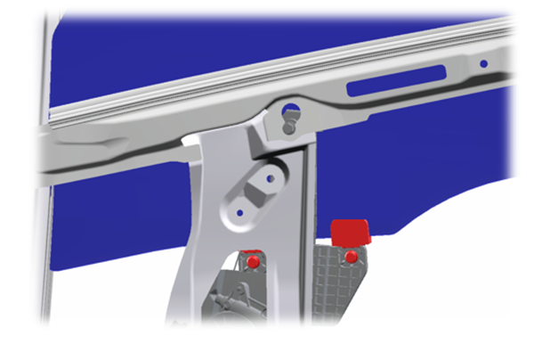
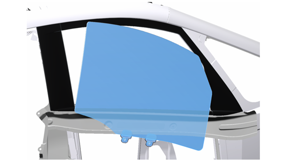
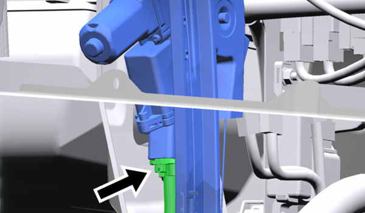
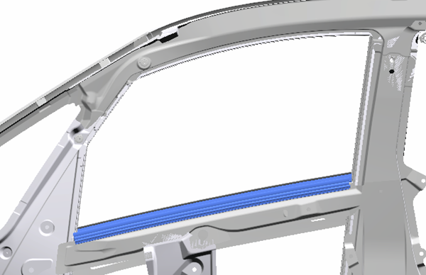
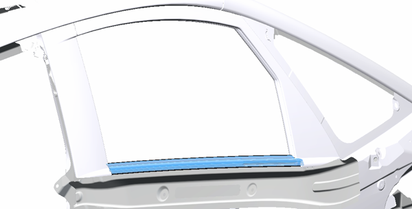
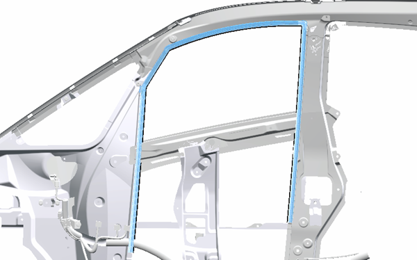

4-3-3 RHサイドガラス・レギュレーター
構成図
|
1 |
REGULATOR ASSY, SIDE WINDOW, RH (F9810-B1000) |
2 |
GLASS SUB-ASSY, SIDE WINDOW, RH (F2101-A1000) |
|
3 |
WEATHERSTRIP, SIDE GLASS, INNER RH (F8441-A1000) |
4 |
INSERT, SIDE CONSOLE, RH (E8813-A1000) |
|
5 |
BOLT, FLANGE (Z1216-81202) |
6 |
BOLT, FLANGE (Z1216-81202) |
|
7 |
WEATHERSTRIP, SIDE GLASS, OUTER RH (F8431-A1000) |
8 |
RUN, SIDE GLASS, RH (F8411-A1000) |
|
9 |
??? |
- |
- |
取り外し前作業
-
BOARD SUB-ASSY, SIDE TRIM, LWR RH取り外し4-2-3 インストルメントパネル
-
COVER, SIDE BODY RH, UPR取り外し4-1-3 外装(サイド)
取り外し手順

1.INSERT, SIDE CONSOLE, RH取り外し

2.GLASS SUB-ASSY, SIDE WINDOW, RH取り外し
-
防水フィルムを取り外す。

-
パワーウインドウレギュレータマスタスイッチASSY、ECUコネクターを接続する。
-
補器バッテリマイナスターミナルを接続する。
-
車両メインスイッチをONにする。
-
フロントドアガラスSUB-ASSY RH を取り付けボルトが見える位置まで動かす。
-
車両メインスイッチをOFFにする。
-
補器バッテリマイナスターミナルを切り離す。
-
パワーウインドウレギュレータマスタスイッチASSY、ECUコネクターのコネクターを切り離す。
-
ボルト(A) 2本を取り外す。

-
車両外側からGLASS SUB-ASSY, SIDE WINDOW, RHを取り外す。

3.REGULATOR ASSY, SIDE WINDOW, RH取り外し
-
コネクターを切り離す。
4.REGULATOR ASSY, SIDE WINDOW, RH取り外し
-
ボルト (A) を緩める。
-
ボルト (B) 3本を取り外し、REGULATOR ASSY, SIDE WINDOW, RHを取り外す。

5.WEATHERSTRIP, SIDE GLASS, INNER RH取り外し

6.WEATHERSTRIP, SIDE GLASS, OUTER RH取り外し

7.RUN, SIDE GLASS, RH取り外し
取り付け手順
取り外しと逆の手順で取りつける。
1.REGULATOR ASSY, SIDE WINDOW, RH取り付け
-
ボルト (B) 3本でREGULATOR ASSY, SIDE WINDOW, RHを付ける。
-
ボルト (A) を締め付ける。
-
ボルト(A) 2本でGLASS SUB-ASSY, SIDE WINDOW, RHを取り付ける。
-
パワーウインドウレギュレータマスタスイッチASSY、ECUコネクターを接続する。
-
パワーウインドウが正常に動作することを確認する。